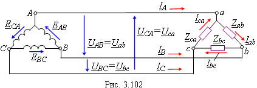

|
Пусть обмотки трёхфазного генератора и трёхфазный приёмник соединены по схеме треугольник-треугольник (Δ-Δ) (рис. 2.102). Так как три ЭДС генератора равны по модулю и сдвинуты по фазе на 120° относительно друг друга, то сумма трёх комплексов ЭДС в замкнутом треугольнике А-В-С-A равна нулю, т. е. EAB + EBC + ECA = 0. Поэтому, если к зажимам А, В и С не присоединена нагрузка, то по обмоткам генератора не будет протекать ток. Как видно из рис. 2.102, здесь возможно только трёхпроводное соединение трёхфазного приёмника с генератором; последний может быть соединён звездой. Положительные направления линейных и фазных напряжений и токов в системе соединения Δ-Δ показаны на рис. 2.102.  |